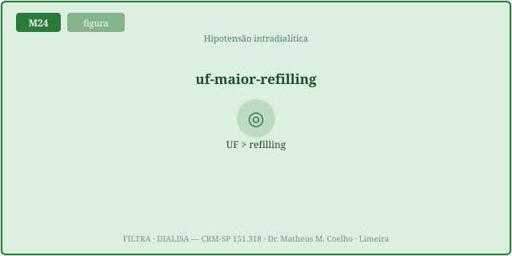
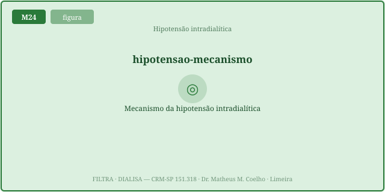
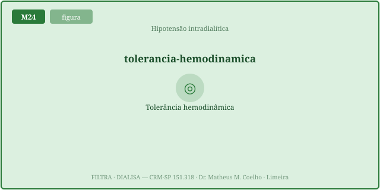
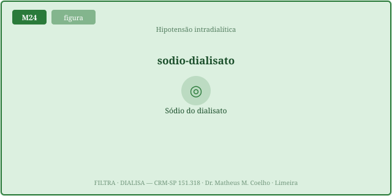
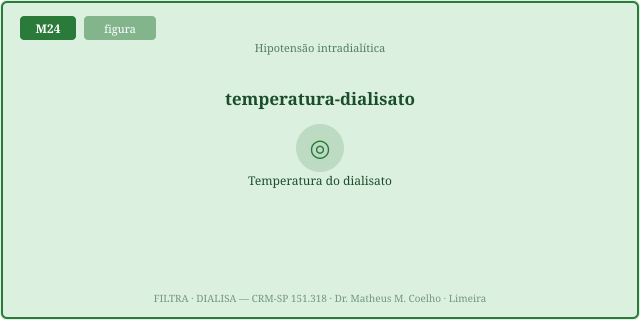
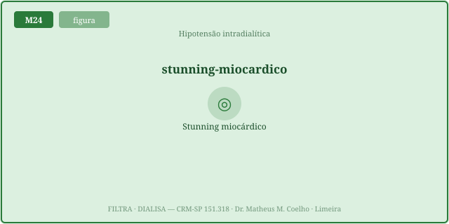

Manter o volume circulante é homeostasia. Na diálise, a UF retira
volume só do plasma; o interstício precisa devolver na mesma velocidade. A relação central é
UF rate × refilling rate: enquanto a UF não supera o refilling, o volume plasmático se mantém; quando
UF rate > refilling, o plasma esvazia → hipotensão. As Fig. 1–8 voltam no Caso, na Trilha e na
Avaliação. Atribuição em CREDITS.md (em curadoria).
A bomba de UF aplica pressão transmembrana e retira água do compartimento plasmático. O plasma só não esvazia porque o interstício o reabastece — o plasma refilling. É um equilíbrio entre uma saída (UF) e uma reposição (refilling).


A taxa de UF (mL/kg/h) = (peso atual − peso seco) / tempo, normalizada pelo peso. Enquanto UF rate ≤ refilling, o plasma fica em platô; quando UF rate > refilling, o plasma despenca — o ponto de crash. A mesma UF total em mais tempo baixa a UF rate e cabe dentro do refilling.

O refilling depende do gradiente oncótico (albumina puxa água de volta ao capilar) e da reserva intersticial. Hipoalbuminemia → refilling baixo. Ao aproximar do peso seco, o interstício tem pouco a doar → o refilling despenca. Comer na diálise desvia sangue para o esplâncnico e piora.


A queda do volume e da pressão a cada sessão causa hipoperfusão repetida do miocárdio → isquemia regional → disfunção transitória (stunning). Repetida 3×/semana, vira lesão estrutural. A UF agressiva cobra um preço que não aparece na pressão de hoje.

A prevenção é reduzir a UF rate: mais tempo de sessão, sessões mais frequentes, peso seco realista, dialisato frio, sódio do dialisato. Tirar o mesmo volume devagar cabe no refilling. A conduta na crise: Trendelenburg, parar/reduzir a UF, bólus de salina.
A pérola (Fig. 1–3): a hipotensão intradialítica é UF > refilling, não "volume baixo". Baixar a taxa de UF (mais tempo, ou UF menor) previne — e o stunning (Fig. 6) é o custo cumulativo silencioso da UF agressiva.
Homem de 64 anos em hemodiálise 3×/semana, 75 kg pré, peso seco 70 kg, sessão de 3 h. "Ganhou muito peso, vamos tirar tudo rápido." Será?
Diretamente do plasma (intravascular). O resto do corpo só perde água indiretamente, pelo refilling do interstício para o plasma.
A taxa (mL/kg/h) com que o interstício reabastece o plasma, devolvendo o volume que a UF tirou. É o que impede o intravascular de esvaziar.
UF rate × refilling rate. Se UF ≤ refilling, o volume plasmático se mantém; se UF > refilling, o plasma cai → hipotensão.
Não. O paciente costuma ter excesso de volume total. A hipotensão é a velocidade da UF superando o refilling — um problema de fluxo, não de estoque.
UF total = (peso atual − peso seco); UF rate = UF total / tempo, normalizada pelo peso (mL/kg/h). Taxa alta (>10–13 mL/kg/h) → risco.
A mesma UF total em mais tempo dá uma UF rate menor, que cabe dentro do refilling. Tirar devagar = tirar dentro da reposição.
A albumina gera o gradiente oncótico que puxa água do interstício de volta ao capilar. Albumina baixa → refilling baixo → crash com UF moderada.
O interstício tem pouco a doar → o refilling despenca. A mesma UF rate que cabia no início passa a superar o refilling esgotado.
A refeição desvia sangue para o esplâncnico (vasodilatação pós-prandial), reduzindo o volume efetivo e o refilling central.
Disfunção miocárdica transitória por hipoperfusão repetida a cada sessão. Cumulativa: ao longo do tempo, lesão estrutural.
Resfriar o dialisato aumenta o tônus venoso e a resistência → sustenta pré-carga e pressão quando o refilling não acompanha.
Sódio levemente mais alto cria gradiente que retém água no plasma e ajuda o refilling (ao custo de sede/sobrecarga se exagerado).
O rim defende o volume circulante; a máquina o desafia. Tirar volume sem derrubar o intravascular é manter a homeostasia hemodinâmica — equilibrando duas velocidades.
Os controles do Lab alimentam esta curva. A linha ciano é o estado atual; a verde é a mesma UF total em tempo maior (UF gentil, que mantém o platô). A linha tracejada laranja é o limiar de hipotensão (queda de 18% do volume plasmático); o ponto laranja marca o crash.
| Variável | Atual | Comentário |
|---|---|---|
| UF total (mL) | — | (peso atual − peso seco) |
| UF rate (mL/h) | — | UF total / tempo |
| UF rate (mL/kg/h) | — | >13 = alta |
| Refilling máx (mL/kg/h) | — | a reposição disponível |
| Margem (refilling − UF rate) | — | <0 = crash |
| Queda do volume plasmático | — | % do PV inicial |
| Risco de hipotensão | — | 0 a 100% |